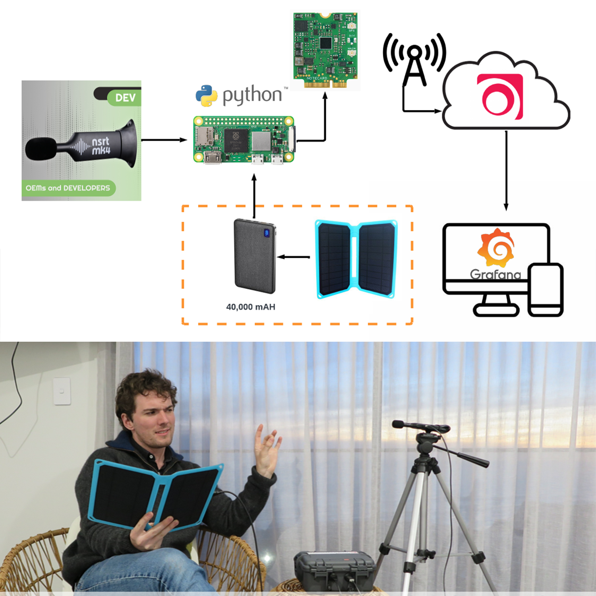
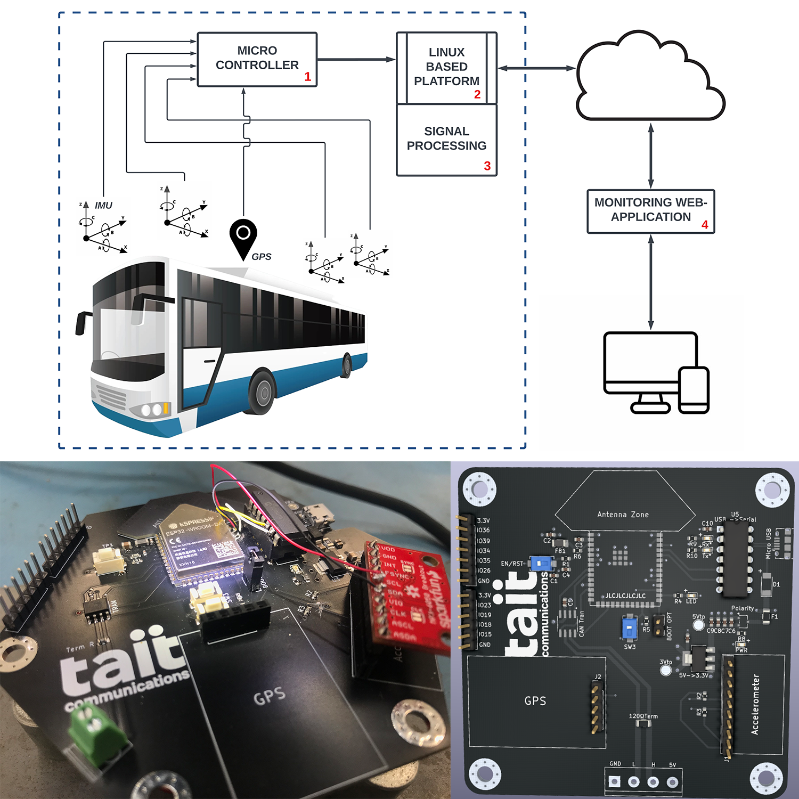
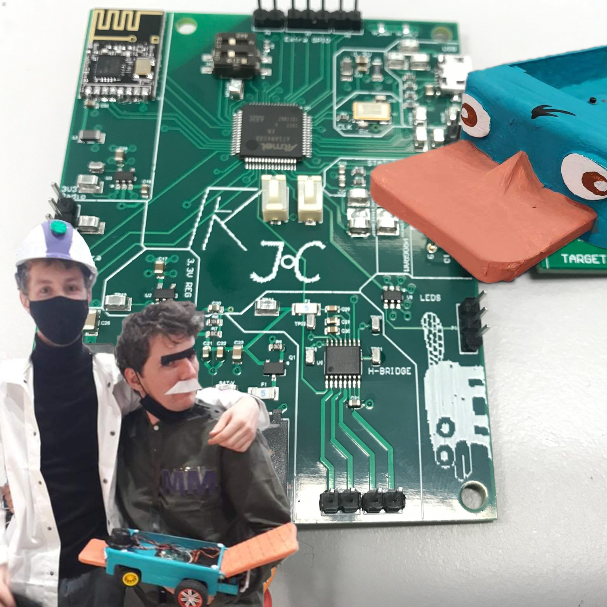
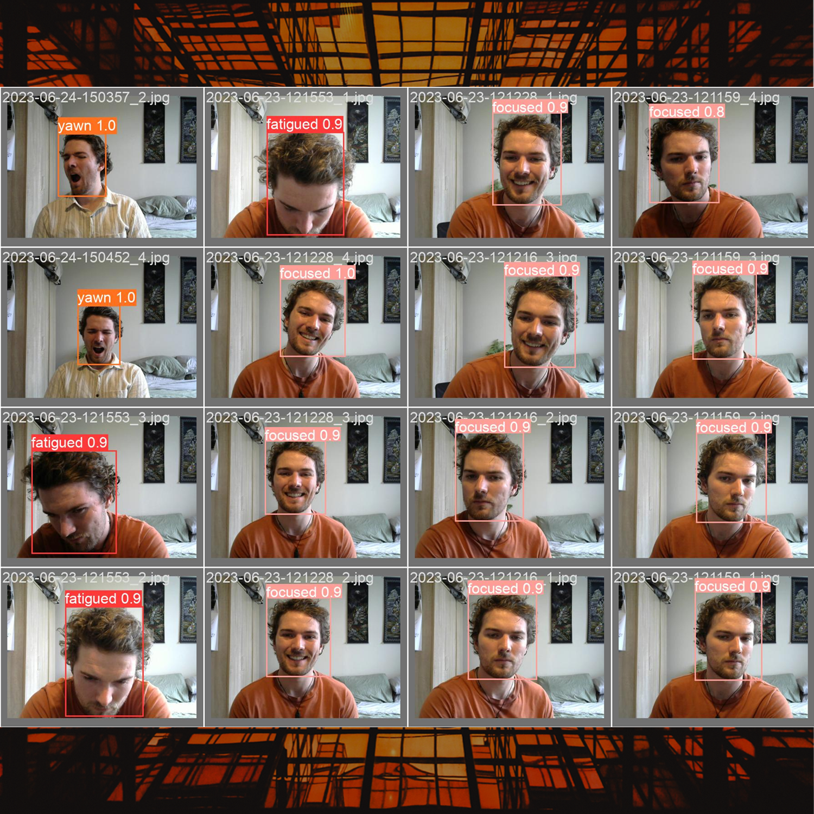
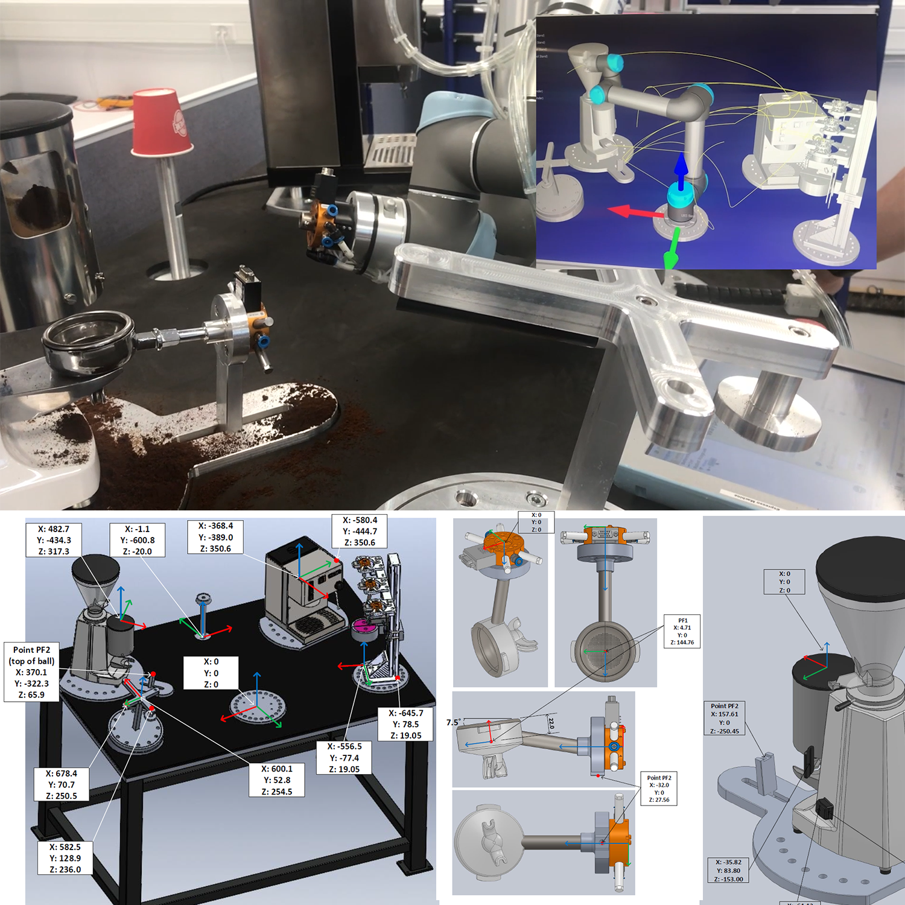
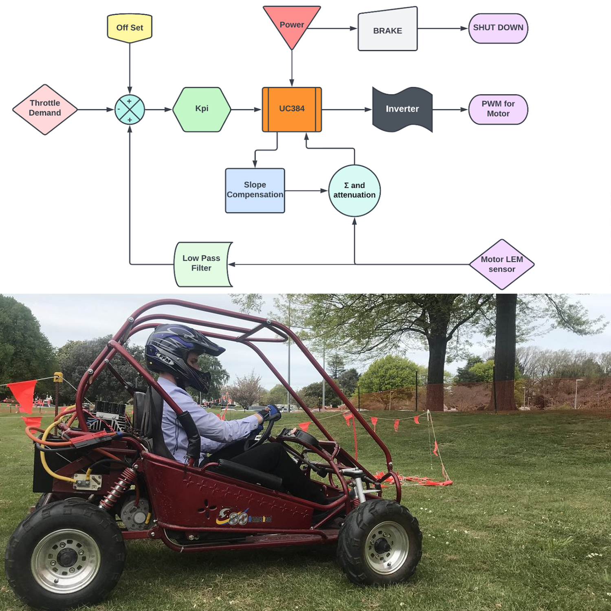
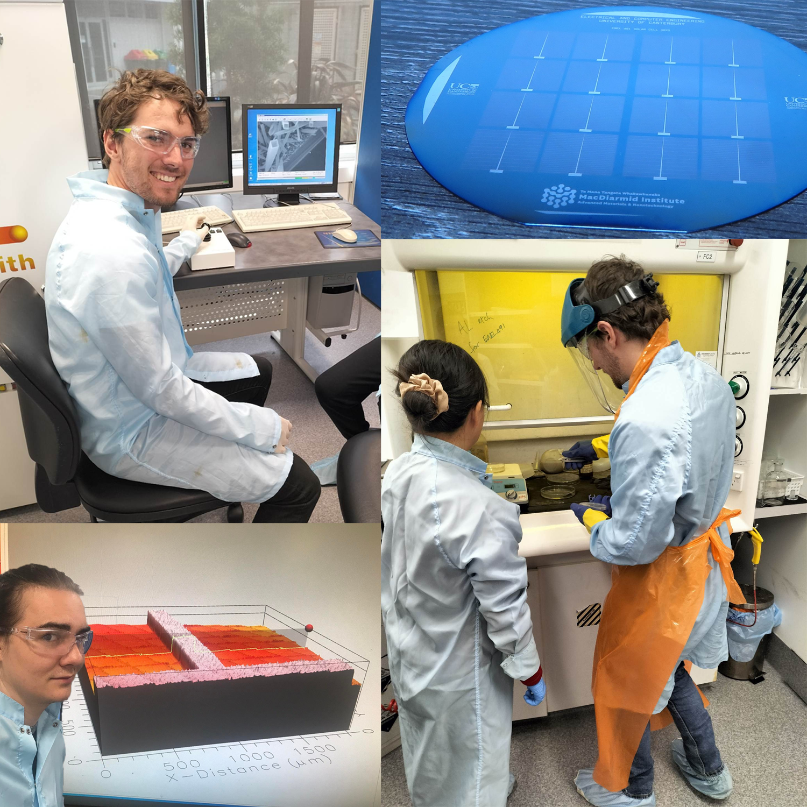
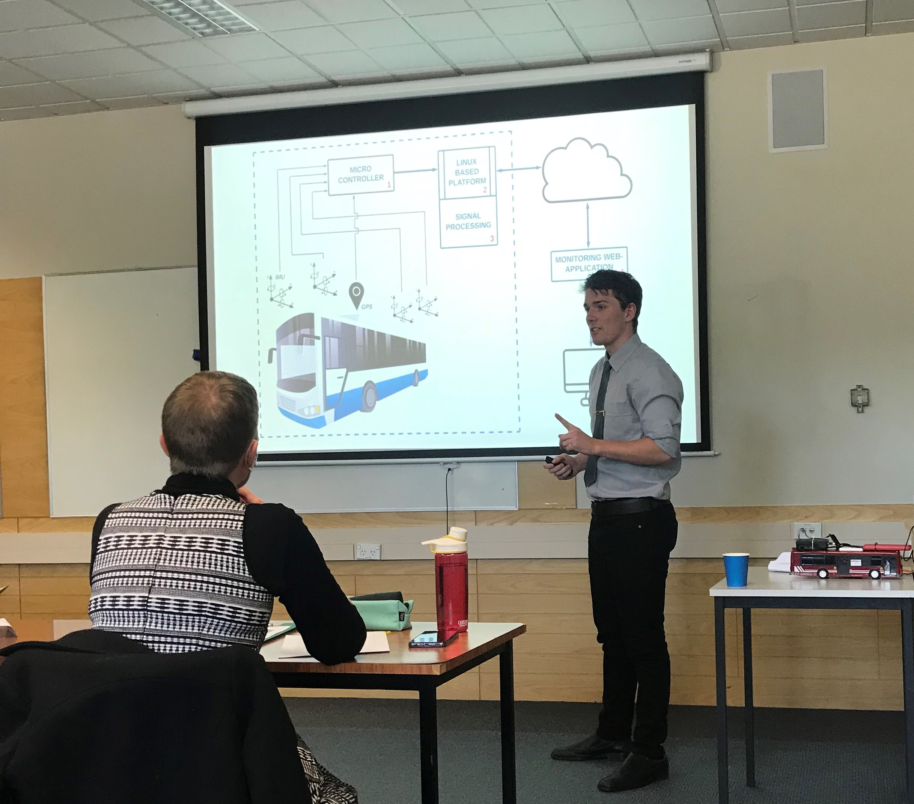
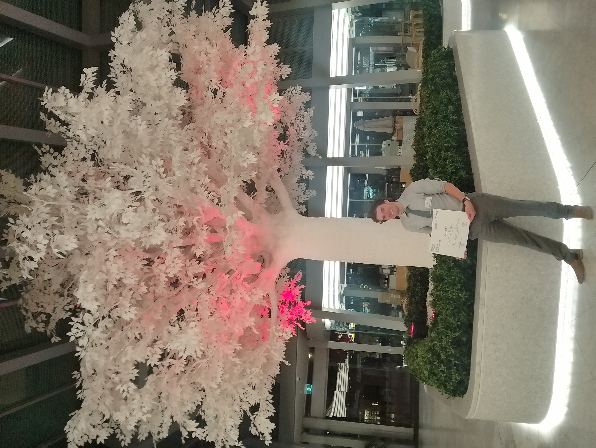
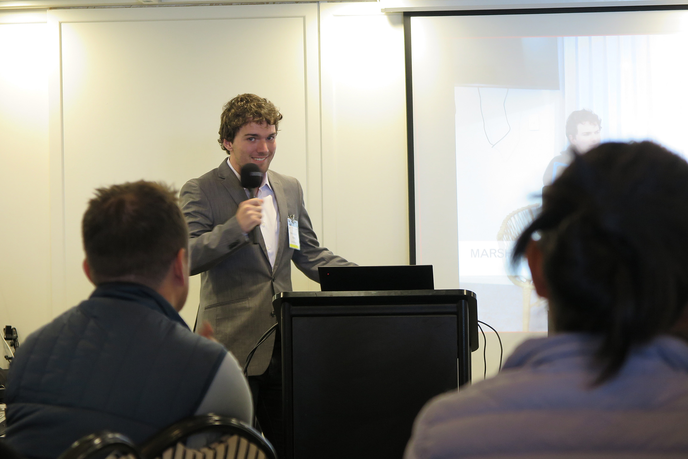

I'm Forester King,
an electronic engineer who reaches for the stars

About me.
I am a electrical and electronic engineer, who is resourceful, kind-hearted, ambitious, and hardworking. My ambition is to be involved in revolutionary electronic projects relating to hardware design, embedded systems, and with the end goal of improving the world through my creations, and to one day send my work to the stars.
Experience
- MarshallDay Acoustics Acoustics Consultant and R+D Electronics Engineer | Nov 2022 – June 2025
- MainPower NZ Power Engineer Intern | Nov 2021 – Feb 2022
- University Of Canterbury Student Leader | Jan 2021 – Nov 2021
- CompSoc President & Webmaster | Aug 2020 – Nov 2022
Technical Skills
- PCB Design in Altium and KiCad
- Embedded Systems Development
- Programming: C, Python, MATLAB, VHDL, HTML.
- Wire Harnessing: CAN BUS & I2C experiance
- Manufacturing: SOLIDWORKS, Lasercutting, and 3D printing.
- Power Electronics
Soft Skills
- Independent Project and Client Management
- Time management for dependable deliverables
- Presenting & Public Speaking
- Leadership Positions
- Curious and Self-driven Learner
- Adaptive to ever changing requirements
Projects.

RC Truck with low-latency video feed
As a personal IOT project I have recently created a RC car that streams a low latency video to website. The RC truck is also fully controlled via a website. It uses a Raspberry Pi as its controller, a servo motor to steer, and a 12V PWM controlled DC motor for driving. I also created a Raspberry Pi hat PCB for this in Altium Designer to act as a refresher. Project Link.
{kind=link}

Professional Sound Logger
At my last job I was the sole R&D department, and I created a low-cost sound logger that would send real time updates of high precision sound data to a server, which was able to be viewed remotely via a user-friendly GUI. The sound logger was weather resilient and used a battery pack and solar panel for its power supply. I presented this device to the whole company at the 40th year anniversary and it was well received.
{kind=link}

Final Year Project
I designed and programmed an embedded system to collect data from multiple environmental sensors and modules to determine rider comfort in a vehicle. Key aspects of this project were: using I2C and CAN wire harnesses, programming an ESP32 in C, PCB design, and integrating the embedded system to effectively communicate with a separate Linux based platform. Project Link.
{kind=link}

Perry the RC STM32
Our group developed a ‘Wacky Racer’ which is a remotely controlled vehicle that used surface mount PCBs and fly by wire technology to control the vehicle.
From processing-unit, to programming, to chassis, all aspects of our wacky racer were custom made. The controller was located in the user's hat and would control the car via head movements.
{kind=link}

Student Fatigue Detection
For my Computer Vision course, I developed a realtime program to detect student focus and fatigue using AI deep learning. The AI operates on a local GTX970 graphics card and does not require special hardware. Built with PyTorch and the YOLOv5 object detection algorithm, the model was trained on labelled images of focused and fatigued states, including posture and yawning. Project Link.
{kind=link}

Robotic Coffee Maker
For my fourth-year robotics project, my teammate and I programmed a UR5 robotic arm to autonomously make espresso coffee. The project involved applying key robotics concepts such as inverse kinematics and spatial transformations to control the arm’s movement and interaction with various tools. Project Link.
{kind=link}

Go-Cart Power Electronics
Alex Delyagin and I designed, built, tested and deployed an analogue control system that ensured a Go-Kart motor would deliver a safe amount of power for a demanded acceleration. This was achieved via a Fixed Frequency Current Mode Controller (FFCMC). My peers raced against one another to determine who had the fastest lap time, and thereby the most efficient circuit.
{kind=link}

Photovoltaic Cell
For my nanotechnology course, we created a photovoltaic cell, learning the fabrication process and the challenges of manufacturing solar cells. Our group successfully produced a working solar cell, though with low efficiency (0.75%) due to issues such as insulation defects and contamination. The project provided hands-on experience with key fabrication steps and equipment, and reinforced the importance of improved cleanroom standards.
Presenting.



One of the skills I’ve developed — and take real pride in — is my ability to present. I’m confident in communicating complex engineering and business ideas in a way that is clear, concise, and engaging for both technical and non-technical audiences.
This has been recognised through achievements such as winning the Best Presentation Award from Entre (2023), earning an A+ for my Final Year Project presentation, and delivering an R&D presentation at my previous role that received strong company-wide approval.
I’ve built this skill through hands-on experience as a student leader, serving as president of a club of over 300 students, and through my time with Toastmasters.